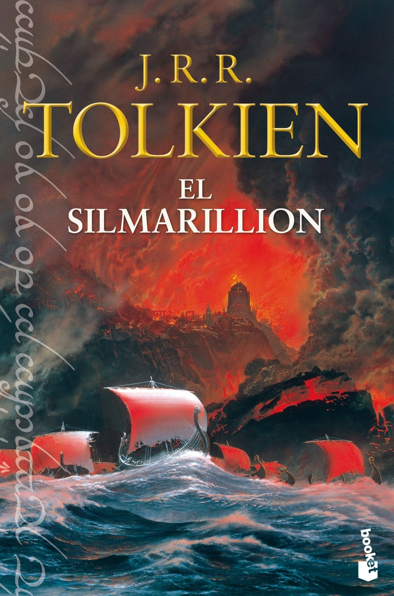

Se hace complicado hablar de El Silmarilion, tanto por su particular estructura como obra literaria, como por su largo y complejo proceso de creación y edición,
como por la variedad de temas, historias y personajes de que trata.
Lo primero que debe tenerse en cuenta al hablar de 'El Silmarilion' es que no es una novela, son un conjunto de historias ambientadas en un rico mundo de fantasía,
el Mundo de Arda. Tampoco se puede decir que sea un libro de cuentos, porque de ello podría deducirse que las historias que forman parte de 'El Silmarilion' son
independientes entre sí. En realidad, estamos frente a un conjunto de historias independintes, pero con fuertes lazos que las interrelacionan; así, aunque podemos
encontrar historias ambientadas a miles de años de distancia y a miles de kilómetros unas de otras, seguiremos estando en el Mundo creado por Tolkien, seguramente
podremos trazar árboles genealógicos que acercarán a los personajes más diversos y nos encontraremos con objetos o personajes que vertebren muchas de las historias,
como pueden ser los mismos Silmarils o la saga de Fingolfin que, a través de los milenios, llega hasta Elrond de Rivendel.
El proceso de creación comenzó poco después de acabar la Primera Guerra Mundial, en la que Tolkien participó. Fue un proceso lento, con altibajos creativos (con
años en que se aportaba mucho a la obra y años en que el proyecto quedaba aparcado) y con numerosas probaturas y versiones de las distintas partes que habrían de
formar lo que hoy llamamos 'El Silmarilion'. Tolkien, trabajador infatigable, hacía y rehacía sus historias, dedicándole más tiempo y esfuerzo a unas que a otras.
El libro está formado por 5 partes que, en principio, eran independientes, pero que el autor acabó deseando ver publicadas conjuntamente (deseo que recogió su hijo
Christopher cuando publicó la obra tras la muerte de su padre). Estas partes son:
Fuente: Wikipedia